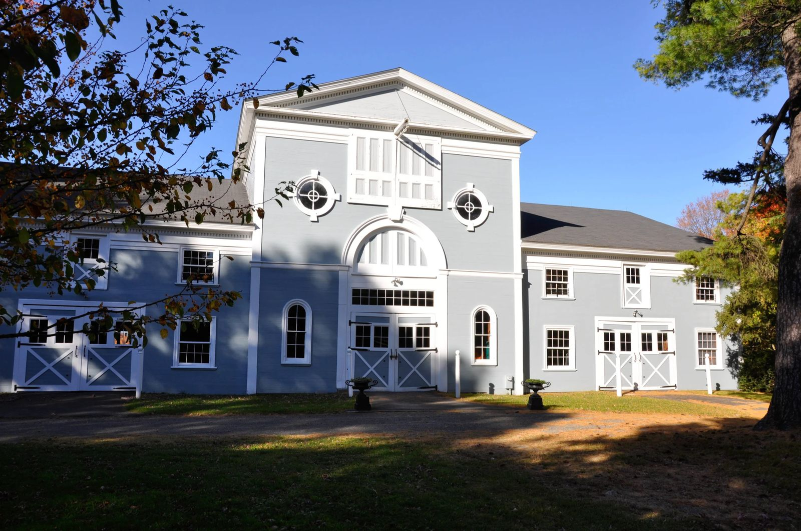
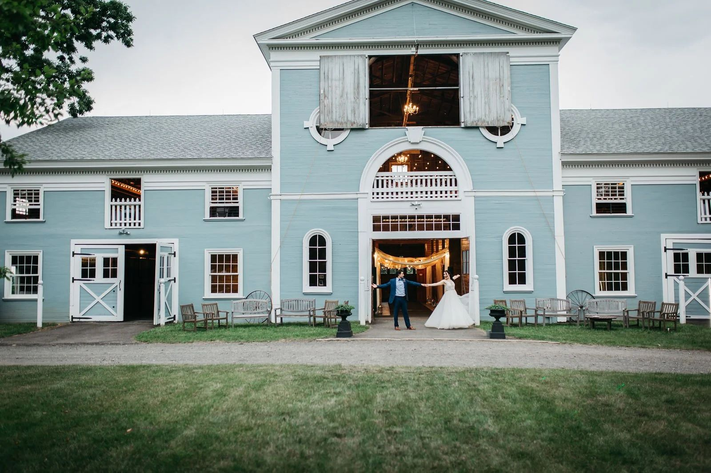
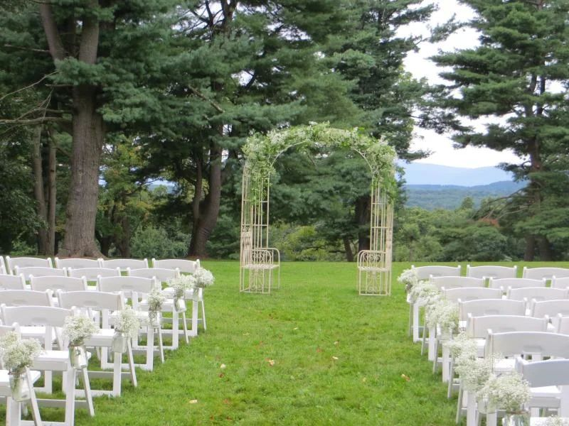

01 · Getting ready
The whole estate is yours
Access two days before and the day after for setup and cleanup. A bridal day cottage, plus a private groom’s day room in the barn.
Concept preview · not affiliated with The Hill

Hudson Valley Weddings at The Hill
A historic estate on Bells Pond Road in Hudson, NY, with horse pastures, mountain views and the 1801 Palladian Barn.
2027 dates
Pick your wedding day and two alternates. We check each against the season The Hill publishes, then open an email to Lisa, the site manager, with all three dates. She handles appointments and availability.
This page doesn’t show live availability or pricing. Every date is a request until Lisa confirms. Call to confirm: 845-758-9002.
The wedding day

01 · Getting ready
Access two days before and the day after for setup and cleanup. A bridal day cottage, plus a private groom’s day room in the barn.

02 · Ceremony
Choose from indoor and outdoor locations. If it rains, the ceremony moves downstairs or upstairs in the barn. Reverend Betsy, an ordained Interfaith Minister, is available to officiate.

03 · Cocktails
The estate’s old blacksmith’s shop, with lovely windows and a long farm table. The wagon bar, games and outdoor furniture are on hand.

04 · Dinner
The barn holds 75 to 300 guests, with string lights, 300 padded white chairs, round, rectangular and farm tables.

05 · Dancing, then the fire
Amplified music runs until 10:30 pm and un-amplified until 11:00 pm. Wind down by the fire pit; The Hill says to ask about setting one up.
Since 1801
The estate on Bells Pond Road begins, known from the start for gracious entertaining.
The Hill’s grounds welcomed Lafayette and various European nobility among their many guests.
Once the estate’s carriage barn, now a two-level venue with stalls on the first floor and a vast event space on the second.
Where the estate’s carriages were once repaired, now a charmingly rustic barn for cocktails or a children’s space.
Weddings May through October, one per weekend and no more than 22 a year, on over 300 private acres.
History as told on hudsonvalleyweddings.net.
As listed by The Hill
The Hill quotes custom pricing for each wedding and doesn’t publish rates. This concept doesn’t estimate one.
Call to confirm: 845-758-9002
Thoroughbreds in the pastures, a gazebo, wildflower fields, peonies, apple trees and dogwoods.



About two hours from New York City by car, or take Amtrak to Hudson. Minutes from Hudson’s hotels and B&Bs.
Photos from hudsonvalleyweddings.net.
May through October. One wedding per weekend, and no more than 22 a year.
The barn is listed for 75 to 300 guests for ceremony and reception. Planning fewer or more? Call to confirm.
The ceremony moves downstairs or upstairs in the Palladian Barn.
The Hill shares a vendor list, or you can bring your own.
Amplified until 10:30 pm, un-amplified until 11:00 pm.
Yes. There’s a kid-friendly area with a miniature train, and pets are welcome.
All from The Hill’s own website. Policies may change for 2027. Call to confirm: 845-758-9002.
Tours are by appointment with Lisa, the site manager.